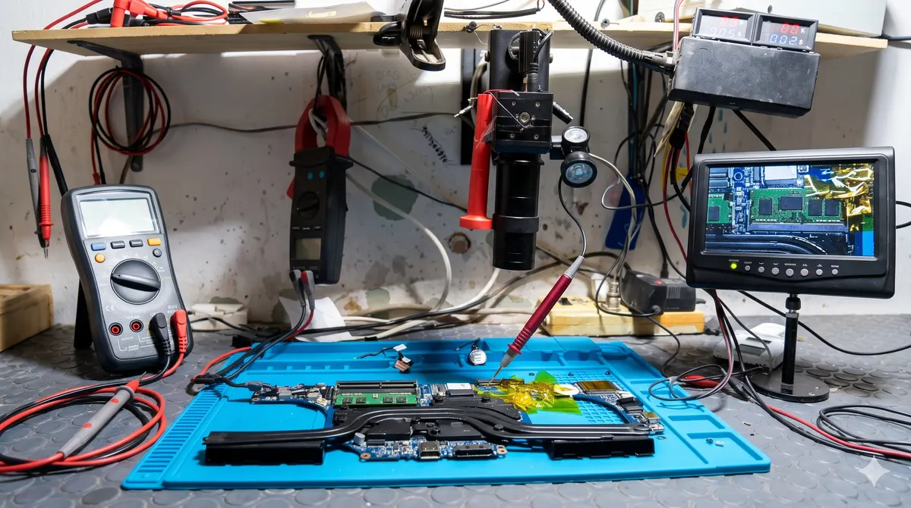
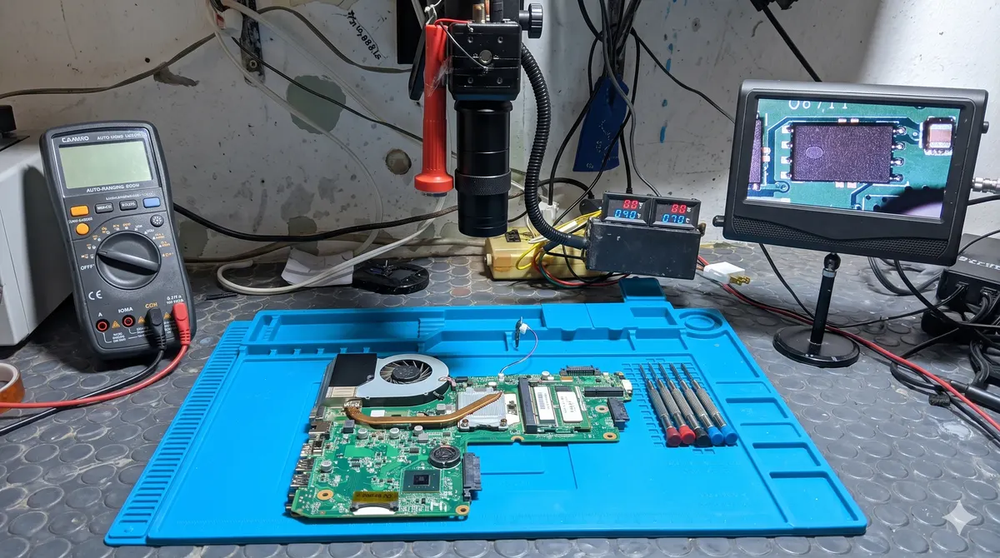
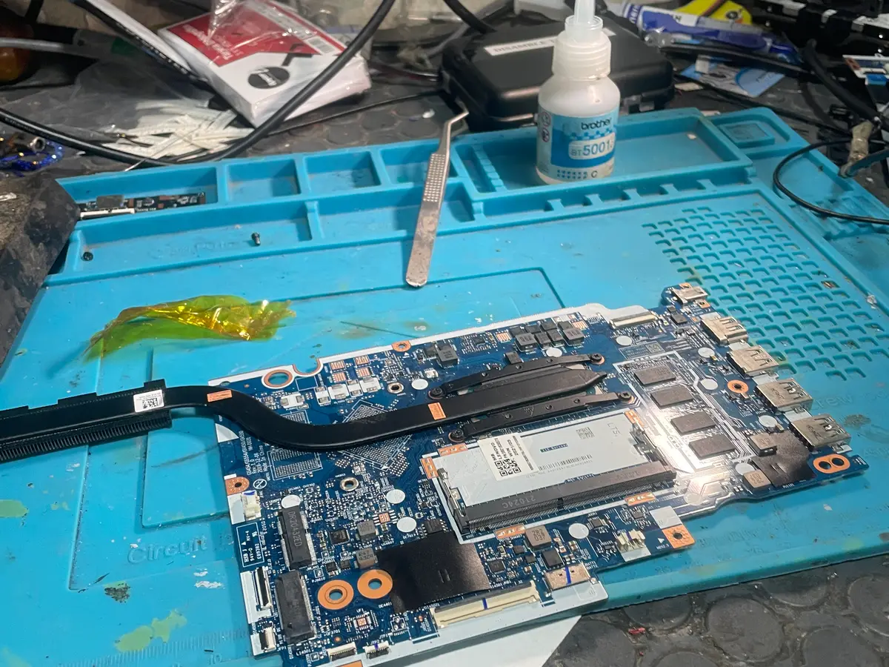
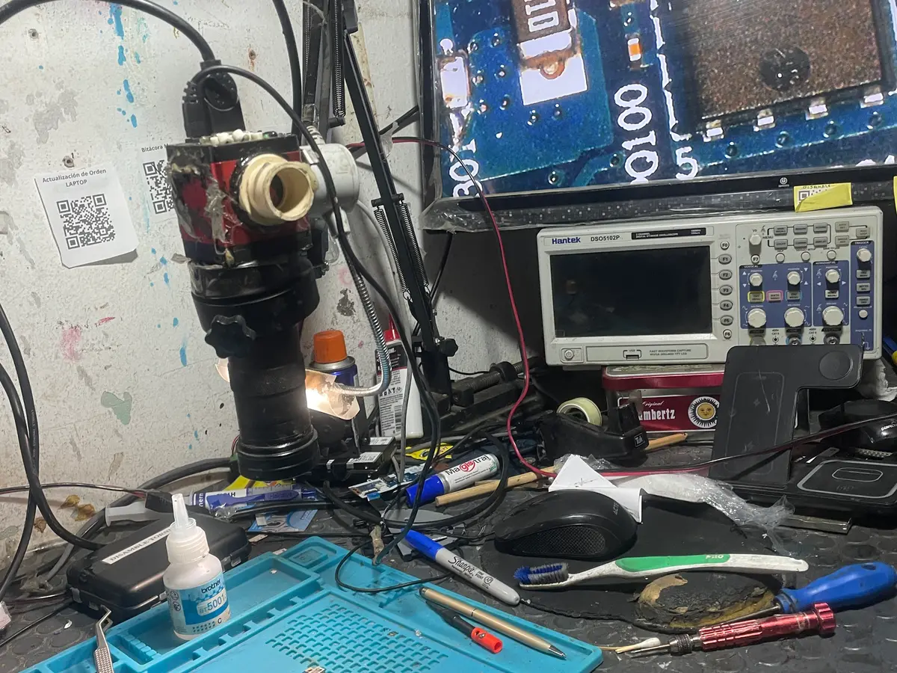
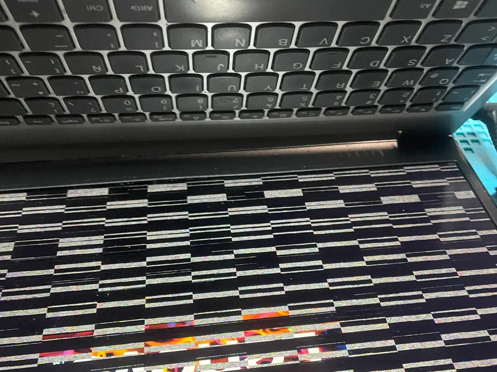
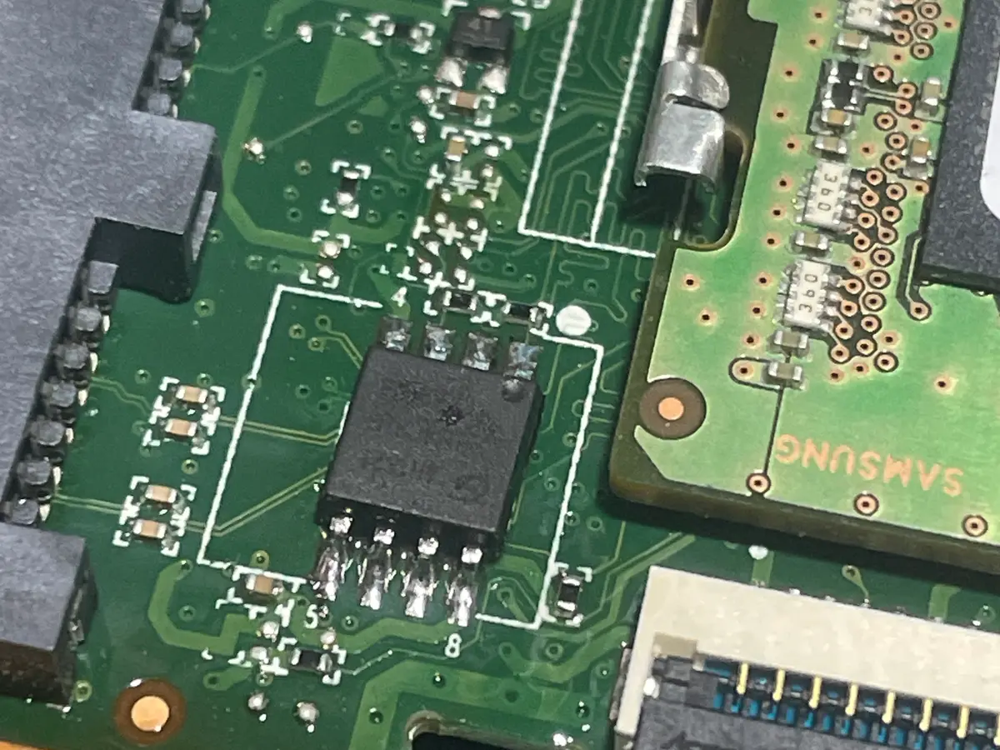
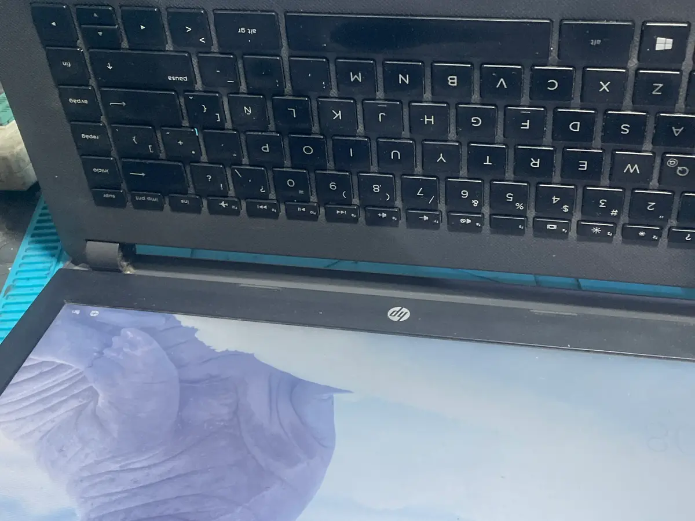
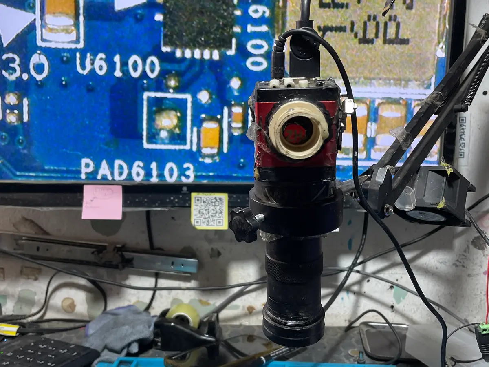
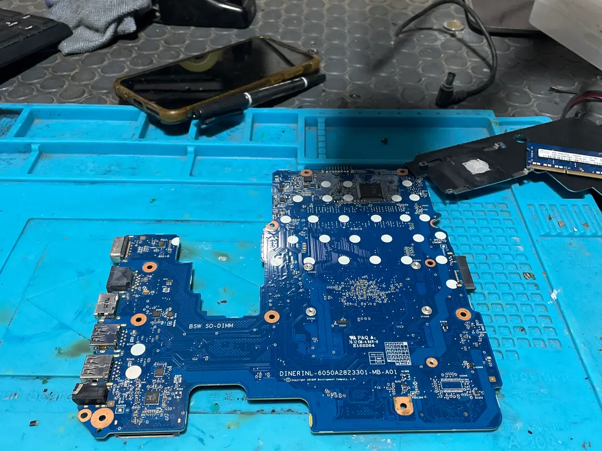

¿Tu laptop no enciende?
Nosotros sí podemos revisarla
Reparación a nivel componente en Oaxaca. Diagnóstico profundo $250 MXN + IVA — equipos que no encienden, daño por líquidos y fallas de placa base. +15 años de experiencia.
¿Qué es la reparación a nivel componente?
La mayoría de los talleres reparan cambiando piezas completas: si la placa base falla, la cambian por otra. La reparación a nivel componente va más profundo: identificamos exactamente qué componente dentro de la placa base falló — un capacitor, un mosfet, un chip de alimentación — y lo reemplazamos de forma quirúrgica.
Esto no solo es más económico que cambiar la placa completa, sino que en muchos casos es la única solución posible cuando no existe refacción disponible para tu modelo específico. Con +15 años en el taller, hemos resuelto casos que otros talleres ya habían declarado sin solución.
No hacemos recuperación de datos ni reballing de tarjetas gráficas dedicadas. Ver lo que no atendemos →
¿Tu laptop tiene alguno de estos problemas?
Si reconoces alguno, tráenosla. Antes de declararla perdida, déjanos revisarla.
No enciende aunque la cargues
El LED de carga prende pero la pantalla no muestra nada. Puede ser falla de alimentación o placa base.
Se mojó o tuvo contacto con líquidos
Café, agua, refresco. El daño por líquidos es tratable si se atiende a tiempo. Entre antes llegues, mejor.
Enciende pero no carga la batería
El equipo funciona enchufado pero la batería no carga. Puede ser el circuito de carga en la placa base.
Pantalla negra al encender
La laptop hace ruido, los ventiladores giran, pero la pantalla queda negra. Falla de GPU, RAM o placa.
Se apaga sola sin razón aparente
Funciona un momento y se apaga de golpe. Puede ser sobrecalentamiento severo o falla de componente.
Otro taller dijo que no tiene solución
Antes de darlo por perdido, tráenoslo. Lo revisamos y te decimos honestamente si hay o no hay solución.
Si no estás seguro de qué tiene tu equipo, escríbenos y te orientamos antes de venir.
Proceso de diagnóstico profundo
Importante antes de traer el equipo
El diagnóstico profundo cuesta $250 MXN + IVA y NO se descuenta de la reparación. Esto se debe a que el proceso requiere desmontaje completo y análisis de componentes — tarda hasta 5 días hábiles. Te explicamos por qué antes de que autorices.
Traes el equipo al taller
Sin cita. Lunes a viernes 9:30–20:00, sábados 10:00–15:00.
Diagnóstico profundo — hasta 5 días hábiles
Desmontamos el equipo, analizamos la placa base y todos los componentes. Te contactamos con el resultado y presupuesto de reparación.
Tú decides si autorizas la reparación
Si el costo de reparación no justifica el equipo, te lo decimos. Nunca reparamos sin tu autorización.
Entrega con garantía
35 días de garantía en mano de obra. Si el equipo no tiene solución viable, te lo devolvemos armado.
Por qué otros talleres no pudieron y nosotros sí
No prometemos resultados. Prometemos el diagnóstico más profundo disponible en Oaxaca.
Diagnóstico a fondo, no por descarte
Muchos talleres intentan cambiar piezas hasta que algo funciona. Nosotros identificamos el componente exacto que falló antes de tocar nada.
Herramientas de microsoldadura
La reparación a nivel componente requiere equipo especializado: estaciones de soldadura, microscopios y equipos de diagnóstico electrónico.


+15 años de casos complejos
Hemos visto casi todo tipo de falla. Si algo tiene solución técnicamente viable en Oaxaca, lo encontramos.
Lo que no atendemos (para ser honestos)
Preferimos decirte que no podemos antes de cobrarte por algo que no resolveremos.
Recuperación de datos
No hacemos rescate de información de discos duros dañados. Si necesitas ese servicio, te podemos orientar con quién acudir.
Reballing de tarjetas gráficas dedicadas
No realizamos reballing de GPU. Es un proceso que requiere equipo muy específico que no tenemos.
Reparación de celulares o tablets
Nos especializamos en laptops, computadoras e impresoras. Celulares y tablets no los atendemos.
Algunos trabajos a nivel componente
Reparaciones reales de placa base y daño por líquidos en nuestro taller.







Costos del diagnóstico profundo
Sin letra chiquita. Sin cobros por sorpresa.
Diagnóstico a nivel componente
$250
MXN · costo fijo
-
¿Se descuenta de la reparación? No — es un costo fijo por el trabajo de análisis
-
Tiempo de diagnóstico Hasta 5 días hábiles
-
El diagnóstico incluye Desmontaje, análisis de placa y componentes, presupuesto de reparación
-
Garantía en reparación 35 días en mano de obra
- Pago: efectivo o transferencia bancaria
Si el equipo no tiene solución viable o el costo no justifica la reparación, te devolvemos el equipo. El diagnóstico de $250 se cobra en todos los casos — es el trabajo de análisis que ya se realizó.
Preguntas frecuentes
Lo que más nos preguntan sobre diagnóstico a nivel componente.
El diagnóstico profundo cuesta $250 MXN + IVA y no se descuenta de la reparación. Esto es porque requiere desmontaje completo y análisis de cada componente, lo cual tarda hasta 5 días hábiles. Al terminar te damos el resultado y el presupuesto de reparación para que decidas si autorizas o no.
Depende del tiempo que haya pasado y del líquido. Mientras antes llegues, mayores las probabilidades. Lo más importante: no intentes encenderla. Si el equipo se mojó y lo enciendes antes del diagnóstico, el cortocircuito puede dañar componentes que de otro modo se habrían salvado. Tráenosla apagada.
Sí vale la pena traerla para un segundo diagnóstico. Muchos talleres no hacen reparación a nivel componente — si la placa base falla, la dan por muerta. Nosotros analizamos componente por componente. No siempre tiene solución, pero con +15 años hemos resuelto casos que parecían perdidos. El diagnóstico de $250 te da certeza en un sentido u otro.
Varía mucho según la falla. Puede ir desde un reemplazo de componente económico hasta una reparación más compleja. Te damos el presupuesto exacto con el diagnóstico. Si el costo no justifica el equipo, te lo decimos antes de que gastes en la reparación.
Te la devolvemos armada y en las mismas condiciones en que la recibimos. El costo del diagnóstico de $250 se cobra en todos los casos — es el trabajo de análisis que ya se hizo. Nunca prometemos resultados antes de ver el equipo.
Sí, puedes escribirnos por WhatsApp con el modelo y los síntomas. Te damos una orientación inicial, aunque el diagnóstico definitivo solo podemos darlo con el equipo físicamente en el taller.
¿Tu laptop no enciende o tiene daño severo?
Tráela al taller antes de darla por perdida.
Con +15 años hemos resuelto casos que otros talleres no pudieron.
Leandro Valle 222, Centro, Oaxaca · Lun–Vie 9:30–20:00 · Sáb 10:00–15:00
También reparamos
Más servicios especializados en Cise Laptop.
Bisagras y carcasas
Desde $650 MXN + IVA
Actualización SSD y RAM
Desde $1,400 MXN + IVA
Reparación de impresoras
Diagnóstico $150 MXN + IVA
¿Otro problema? Escríbenos — si no lo hacemos, te decimos honestamente.
Visítanos en el taller
Dirección
Calle Leandro Valle 222, Centro, Oaxaca
(antes de la marisquería La RED,
entre Hidalgo y Guerrero, local azul)
Horarios
- Lunes – Viernes9:30 – 20:00
- Sábados10:00 – 15:00
- DomingosCerrado
Métodos de pago
- Efectivo
- Transferencia bancaria (SPEI)
- No aceptamos tarjeta